A pre-recorded premiere that plays like a live event. Premieres Sunday 8 November 2026.
Serviceplan Middle East for BMW / MYNM
Customer and media events are off for safety reasons. The launch moves to social, in a premium keynote format.
A scheduled premiere on IG, YouTube and X with a countdown and a live chat, then boosted through media.
Sulaymaniyah showroom, Riyadh. Premiere on Sunday 8 November 2026.
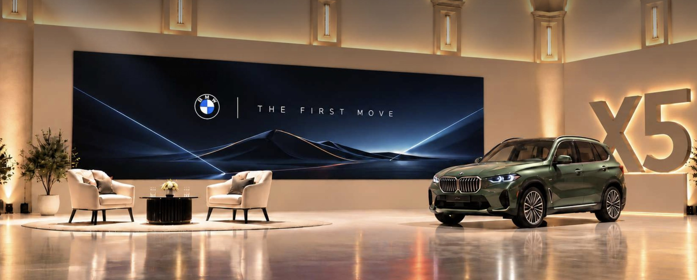
Leading with confidence means the car does the talking. The show has to feel live, keep people watching until the reveal, and leave a library of content behind it. Three principles hold it together.
A countdown before every stream, a host who talks to the audience, and a chat that is looked after in real time. Pre-recorded, never feels it.
The highlight screen behind them has its own story: abstract before the reveal, a landscape that feels like home after it.
Every segment is shot to stand alone, and the same day delivers two car reels and a full set of stills.
The approved script and storyboard, and how each moment comes to life on the day.
Timings are indicative only, to show the shape of the film. Final durations are set in the edit.
| Segment | Indicative length | Language | Subtitles | Screen |
|---|---|---|---|---|
| 1 Cold open | About 25s | Arabic VO | English | Screensaver, low |
| 2 Ahmad intro and handover | About 25s | Arabic, then English | English / Arabic | Screensaver, full |
| 3 Interview, 3 questions | About 1:30 | English | Arabic | Screensaver, full |
| 4 Reveal | About 55s | Music, 2 lines | Both | Five generations, then home |
| 5 Walkthrough, 4 stops | About 1:40 | Arabic | English | Harrat home plate |
| 6 Close and CTA | About 20s | Arabic | English | Harrat, then end card |
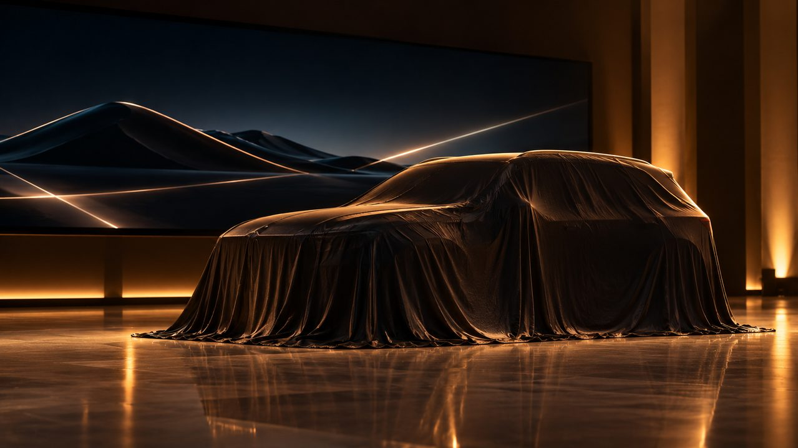
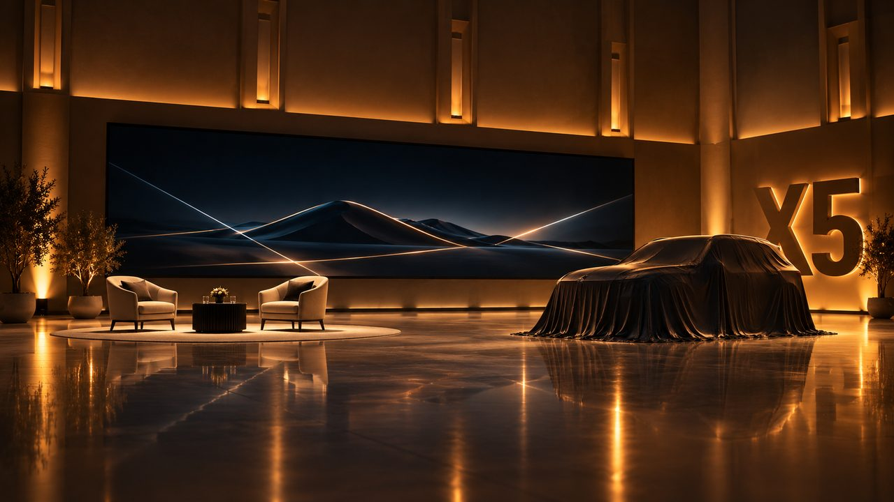
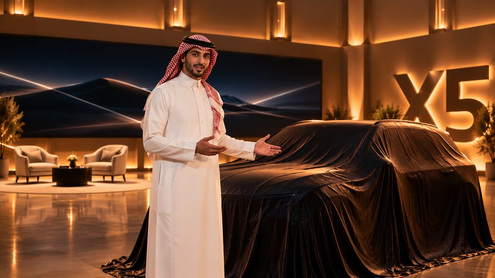
VO. "In 1999, BMW introduced the original Sports Activity Vehicle (SAV). Today, the all-new fifth-generation BMW X5 arrives in the Kingdom." The cold open is lit only by the screen, and the supers play on the screen itself.
Screen. The abstract screensaver runs at low brightness through Scene 1, then comes up to full as the set lights rise on "Adam, welcome".
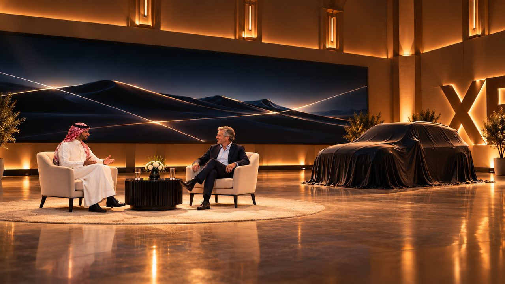
The covered car always in frame between them. Two cameras on a slow drift. The abstract screensaver runs behind them until the reveal.
| Question | Adam's answer beats |
|---|---|
| Q1 In 1999, the BMW X5 was something nobody had seen before. What was BMW trying to do? | The original BMW Sports Activity Vehicle (SAV). It has consistently set industry benchmarks since its launch in 1999. |
| Q2 Five generations later, it's a global bestseller. Why has it lasted? | Imposing presence and a flawless symbiosis of comfort and driving pleasure. Produced at the Home of X, BMW Group Plant Spartanburg, since 1999. The new BMW X5 will set the benchmark once again. |
| Q3 What makes the all-new fifth generation different? | An all-new design with a powerful, monolithic appearance, blending classic BMW SAV proportions with the Neue Klasse design language, and a redesigned interior with BMW Panoramic iDrive. |
| Exit line | "But honestly, Ahmad, I'd rather show you than tell you." |
The light leaves the screen and lands on the car. The last generation on the screen slides off its edge, travels across the floor as a single line of light, and wakes the grille. Five generations handed over in one move.
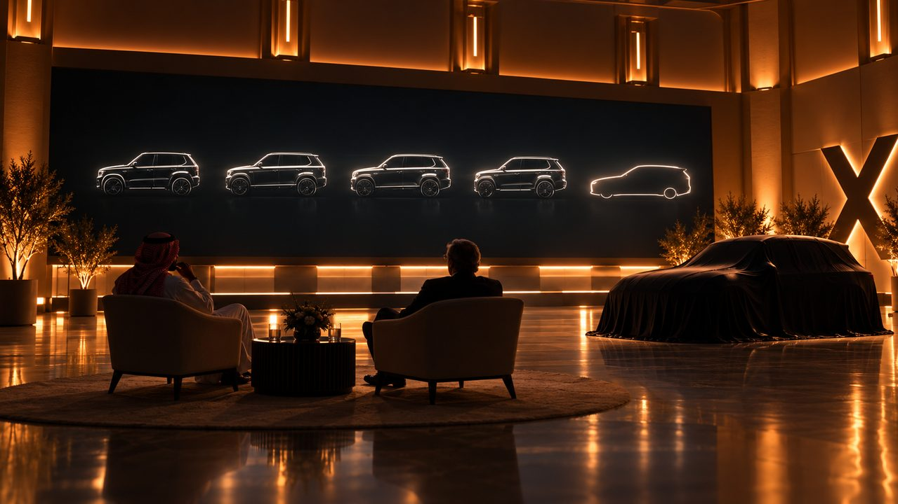
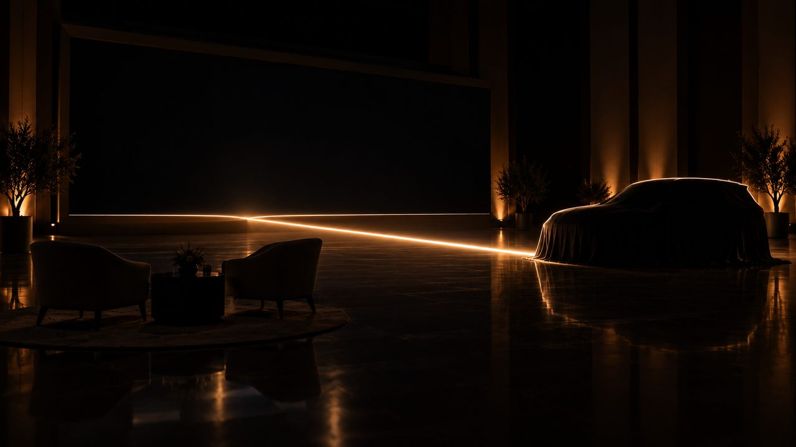
The generations. 1999, 2006, 2013, 2018, 2026. E53, E70, F15, G05, then the new car.
Lines. Adam: "Ladies and gentlemen, the new BMW X5. It's all yours, Ahmad." Ahmad: BMW X5 الجديدة كلياً
Screen, lighting, floor light line and score all chase the same timecode. Cue 0 is Adam's "Lights, please." Timings are indicative and locked in rehearsal.
| Cue | TC | Screen | Light | Sound | Camera |
|---|---|---|---|---|---|
| 0 | +0:00 | Screensaver pulls to black | Set to 30%, key on hosts only | Low pulse in | Wide, locked |
| 1 | +0:01 | Generations 1 to 4 draw, 1.4s each | Set to 10% | Score builds | Slow push on screen |
| 2 | +0:07 | Fifth outline, held 3s | Hold | Build peaks | Push continues |
| 3 | +0:10 | Outline slides off the right edge | Floor light line: single pulse, screen to car, 1.5s | Hit, then cut | Low floor angle |
| 4 | +0:12 | Black | Total blackout. Cover pulled | 2s silence | Hold |
| 5 | +0:14 | Black | BMW Iconic Glow grille up, then double-X daytime running lights | Single low note | Low front three quarter |
| 6 | +0:20 | Black | Body sweep, front to rear, 4s | Score resolves | Side profile |
| 7 | +0:26 | Harrat plate fades up | Full set to 100% over 3s | Full theme | Wide hero |
| 8 | +0:30 | Harrat holds | Ambient light strip lights up the cockpit | Theme under | Wide, hosts step in |
The upright front end with the BMW Iconic Glow vertical kidney grille, and the new switchable double-X daytime running lights.
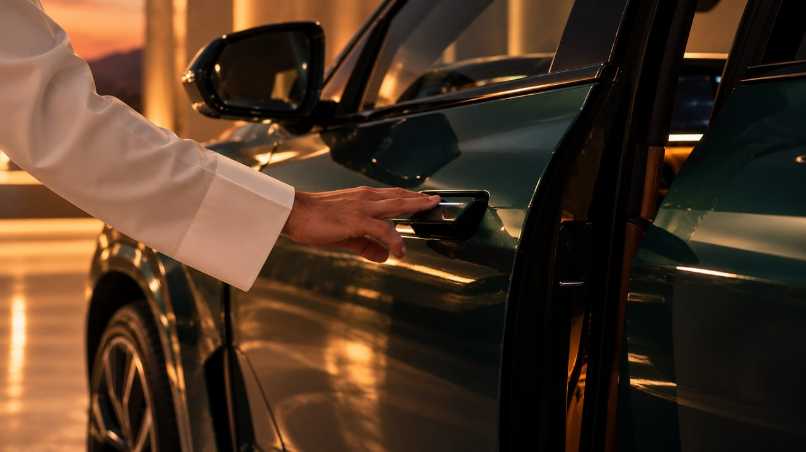
The BMW Winglet operating the new electrically powered doors, and the automatic soft-close doors if fitted. Classic BMW SAV proportions, Neue Klasse design language, alloy wheels up to 23 inches.
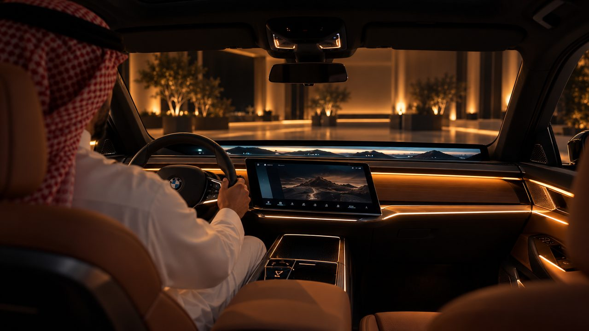
BMW Panoramic iDrive: the free-cut Central Display, BMW Panoramic Vision, the BMW 3D Head-Up Display and the multifunction steering wheel. The set dims for the ambient light strip.
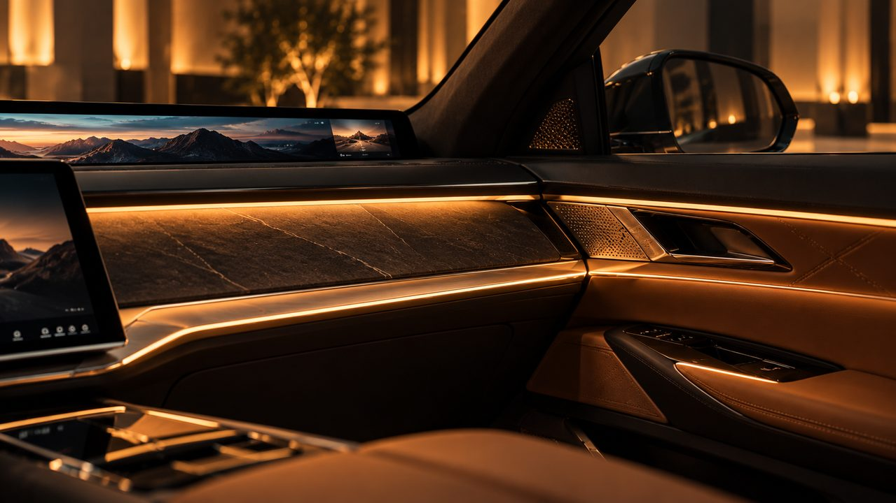
The BMW Passenger Screen, making its debut on the BMW X5, available optionally. Slate, used as a decorative surface by a carmaker for the first time, with glass and X stitching.
Behind them: the harrat plate. The brief's local twist lives here, after the reveal, so the car arrives in a landscape that is unmistakably Saudi: volcanic rock, warm light, blue green tones.
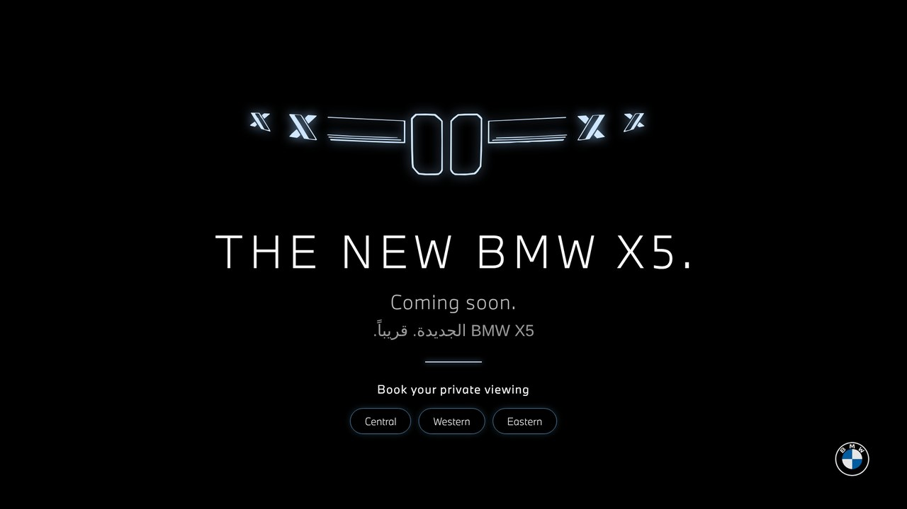
One highlight screen. Abstract until the reveal, home after it.
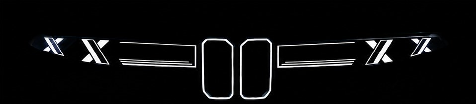
Scenes 1 to 3. One slow abstract loop in the reveal language. Low in the cold open, full from the intro.
Scene 4. E53, E70, F15, G05, then the new car in silhouette. The last one leaves the screen, then black.
Scenes 5 and 6. The harrat backplate: Saudi volcanic fields at dusk, barely moving.
Logo rule. No BMW logo on the screen in any state. The 3D logo lives on the static wall only, one per sightline, as the brief requires.
Spec. One screensaver loop, the generations sequence and the harrat plate, all timecoded. The media day backplate is a still from the global DAM.
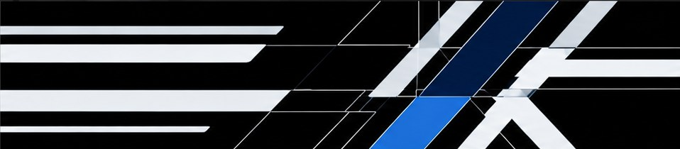
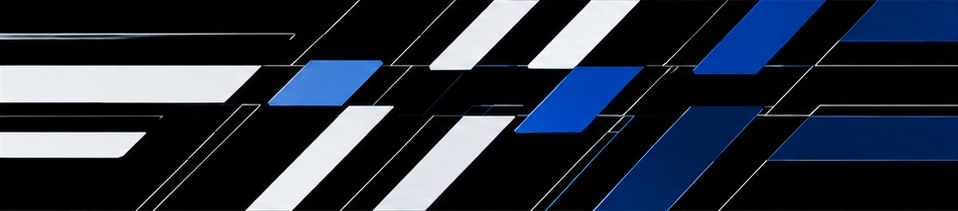
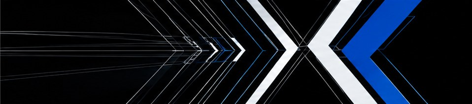
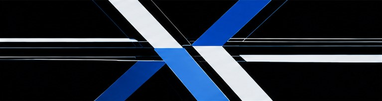
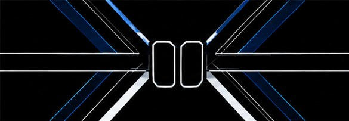
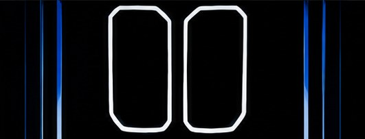
Preview: the reveal storyboard frames in sequence. The final loop is animated from these frames.
A single slow, abstract loop carries everything before the reveal. It is built from the reveal storyboard frames and animated into a seamless 90 second loop, so the room always has movement without competing with the conversation.
| Cold open | About 20% brightness, slowed |
| Intro and interview | Full brightness, slow |
| "Lights, please" | Pulls to black, the generations begin |
Shot first, streamed as a premiere. The countdown, the signal and the chat.
The livestream will begin in
يبدأ البث المباشر خلال
Every platform goes live 10 minutes before the film, straight into this countdown with a low ambient score.
English and Arabic, 16:9 for YouTube and X, 9:16 for Instagram. The booking link is pinned before the film starts.
An IG story countdown sticker from three days out, so followers get a reminder the moment it starts. YouTube's Premiere page counts down too.
YouTube runs as a true Premiere: scheduled, played to everyone at once, and the home of the evergreen video afterwards.
Instagram goes out as a Live, fed with its own vertical version of the film, subtitles placed for the phone.
X goes out as a scheduled broadcast from the same feed. Live chat on all three.
The film is pre-recorded, so the stream can run from a control room anywhere with a strong connection, including Dubai.
| Playout | vMix on a main and a mirrored backup machine. Plays the countdown, then the film, and sends a separate stream to each platform. |
| YouTube | YouTube Studio. The film is uploaded and scheduled as a Premiere, with the 10 minute countdown at its head. |
| Instagram Live Producer on desktop, which gives the stream key for the 9:16 output. | |
| X | X Media Studio Producer, a scheduled broadcast with its own stream key. Access confirmed on the account a week before. |
| Connection | Wired line with at least 50 Mbps upload, plus a bonded 5G backup. |
| Monitoring | One screen per platform watching the public stream, and the chat team in each platform's own tools. |
In the film. One short line from Ahmad before the close invites questions into the chat, recorded as a pickup so it can be dropped.
In the chat. The brand account answers on all three platforms, Arabic first, from an approved answer bank.
Before the day. An IG "Ask" sticker four to six days out so the bank starts from real questions: اسألوا عن X5 الجديدة
| Likely question | Answer | Status |
|---|---|---|
| When can I see it in person? | Private viewings are coming to the Central, Western and Eastern regions. Register at the link in our bio to book your slot. | From script |
| How much is it? | Pricing for the Kingdom will be shared soon. Register for a private viewing to hear it first. | Holding line |
| Which engines come to KSA? | [KSA line up to be confirmed by BMW] | BMW to supply |
| What's new in the design? | A powerful, monolithic appearance blending classic BMW SAV proportions with the Neue Klasse design language, with the BMW Iconic Glow vertical kidney grille and new switchable double-X daytime running lights. | From script |
| What is the BMW Winglet? | It operates the new electrically powered doors. | From script |
| What is BMW Panoramic iDrive? | The free-cut Central Display, BMW Panoramic Vision, the BMW 3D Head-Up Display and the multifunction steering wheel, brought together. | From script |
| Does the passenger get a screen? | The BMW Passenger Screen makes its debut on the BMW X5, available optionally. | From script |
| What's the slate trim? | Slate, used as a decorative surface by an automotive manufacturer for the first time. | From script |
| How big are the wheels? | Alloy wheels up to 23 inches. | From script |
| Where is it built? | At the Home of X, BMW Group Plant Spartanburg, where every BMW X5 has been produced since 1999. | From script |
| Which colours? | [KSA colour list to be confirmed by BMW] | BMW to supply |
Reels, stills, shots and deliverables, all captured on the shoot day.
Captured on the same set, between film setups, for the weeks after the launch. 9:16, 15 to 30 seconds each. References show the pace and camera language.
Jib and slider moves around the body: the BMW Iconic Glow grille and double-X daytime running lights switching on, a light sweep along the profile, the BMW Winglet opening the door, the full width taillights, the wheels.
The wrap-around cockpit coming alive: the 3D backlit ambient light strip, BMW Panoramic Vision and the Central Display starting up, the steering wheel, slate and X stitching in macro, the BMW Passenger Screen.
15 to 20 retouched finals, selected from the list below. Shot on the same set in a dedicated block. Items marked "if fitted" depend on the show car's specification.
| 01 | Front three quarter, full body, hero |
| 02 | Rear three quarter, full body |
| 03 | Side profile, showing the monolithic stance |
| 04 | Front, straight on, upright front end |
| 05 | Rear, straight on |
| 06 | BMW Iconic Glow vertical kidney grille, lit |
| 07 | Double-X daytime running lights, lit |
| 08 | BMW Winglet, macro |
| 09 | Electrically powered door opening, if fitted |
| 10 | Taillights across the full width, lit |
| 11 | Alloy wheel, up to 23 inches |
| 12 | Roofline and glasshouse, high angle |
| 13 | Wrap-around cockpit, wide from the rear seat |
| 14 | BMW Panoramic Vision and free-cut Central Display, lit |
| 15 | BMW 3D Head-Up Display, driver's eye view |
| 16 | Multifunction steering wheel, detail |
| 17 | 3D backlit ambient light strip, set dimmed |
| 18 | BMW Passenger Screen, if fitted |
| 19 | Slate decorative surface, macro |
| 20 | X stitching in the doors and dashboard |
| 21 | Seats, quilting and stitching detail |
| 22 | Glass details and panoramic sunroof |
| Scene | Key shots | Cameras | Pickups |
|---|---|---|---|
| 1 Cold open | Macro cover edge with light sliver, medium covered silhouette, wide set in near darkness | A on slider | Extra macro textures |
| 2 Ahmad intro | Ahmad to camera beside the car, close up on "yet", two shot handshake | A, B | Alt delivery of the joke |
| 3 Interview | Wide two shot on drift, over the shoulder each side, mediums on both | A, B, C wide | Cutaways, screen inserts |
| 4 Reveal | Wide locked, low floor angle on the light line, low front three quarter, side profile sweep, wide hero | A, B, C, all rolling | Grille and double-X macros |
| 5 Walkthrough | Medium front, Winglet operating the door, rear seat view of Panoramic iDrive, Passenger Screen close up | A handheld, B | Winglet, slate and stitching macros |
| 6 Close and CTA | Ahmad to camera beside the car, final high wide | A, B, jib | Optional Q&A line |
| Deliverable | Format |
|---|---|
| Hero launch film | 16:9, plus a 9:16 version for Instagram Live |
| Countdown, 10 minutes | 16:9 and 9:16 |
| Cutdowns, 60s, 30s, 15s | 9:16 and 16:9 |
| Car reels, exterior and interior | 9:16 |
| Photography, 15 to 20 finals | Retouched stills |
| Screen content: screensaver loop, generations, harrat plate | Timecoded, to the screen's resolution |
| Live kit: answer bank and story assets, if the Q&A runs | Shared doc and stories |
The full guide for the production house: how each scene is covered, the equipment for the day, and how the shoot is watched live from Dubai.
Mon 2 Nov 2026
Sulaymaniyah showroom, Riyadh
Sun 8 Nov, 8:30pm KSA
Remote, from Dubai
Jib and slider for every shot of the car. Locked shots only for dialogue and the reveal wide.
Wides, mids, close-ups and sweeps for every scene, with must have and good to have equipment.
Every camera live to a private link, call time to wrap, with talkback to the director.
BMW X5 الجديدة كلياً